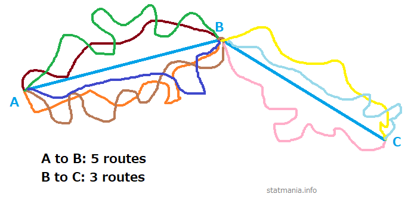

Mathematics (XI): Permutation & Combination
Abdullah Al Mahmud
Permutation
In how many ways can we arrange 3 letters A, B, C?
- ABC
- ACB
- BAC
- BCA
- CAB
- CBA
- That is, 6 ways. In short \(3!=3 \times 2 \times 1 = 6\)
Arranging Subset
In how many ways can we arrange 2 letters from A, B, C?
- AB
- BA
- AC
- CA
- BC
- CB
- Again 6 ways, but we get it using \(^3P_2 = \frac{3!}{(3-2)!}=\frac {6}{1!}=6\)
What is 0!
Why is \(3!\ne 3 \times 2 \times 1 \times 0\)?
Rule of Counting
How the counting rule works?

How many possible routes, from A to B, are there?
Example
1.a. In how many ways can you select a team of 15 cricketers from a team of 23 cricketers and then from them a final team of 11 cricketers?
1.b. Afterwards, if you arrange the cricketers in the field, in how many ways can you do the entire process?
Exercises
1(a)
Find the value of n
\(^{n-1}P_3:^{n+1}P_3=5:12\)
1(b)
Find the value of n
\(4 \times ^nP_3 = 5 \times ^{n-1} P_3\)
1(c)
How many different arrangements can you make by using any 3 items from n different items, without using the general formula and without using an item more than once? What if you can use one item multiple times?

2(a)
How many words can be formed using the letters of the word EQUATION?
- Answer = 8! = 4.03210^{4}
2(c)
Find the n(arrangements) of the words
- committee
- infinitesimal
- proportion
Extra 01
How many arrangements can be made using the letters from the word COURAGE? What if the arrangements must contain a vowel in the beginning?
- \(4 \times 6!\)
Extra Problem 02
How many arrangements are possible using the words
- EYE
- CARAVAN?
3(a)
There are (p+q) items, of which p items are homogeneous and q items are heterogeneous. How many arrangements are possible?
2(j)
There are 10 letters, of which some are homogeneous while others are heterogeneous. The letters can be arranged in 30240 ways. How many homogeneous letters are there?
Let, \(m = \text{number of homogeneous items}\)
- n(arrangements) = 30240 = \(\frac {10!}{m!}\)
- \(m! = \frac{10!}{30240}=120\)
- m = 5
2(k)
A library has 8 copies of one book, 3 copies of another two books each, 5 copies of another two books each and single copy of 10 books. In how many ways can they be arranged?
Total books = \(1 \times 8+3 \times 2+5 \times 2 + 8 \times 1 + 10\) = 42
- n(arrangements) = \(\frac{42}{8!(3!)^2(5!)^2}\)
2(l)
A man has one white, two red, and three green flags; how many different signals can he produce, each containing five flags and one above another?
Flags: W = 2, R = 2, G = 3, Total = 7

Total arrangements = 38
2 (m)
A man has one white, two red, and three green flags. How many different signals can he make, if he uses five flags, one above another?
3(a)
How many different arragnements can be made using the letters of the word ENGINEERING? In how many of them do the three E’s stand together? In how many do the E’s stand first?
Answer:
Consider E’s to be a single word \(\frac{9!}{3!2!2!}=\) 1.51210^{4}
They stand still; don’t get shuffled at all.
Answer \(=\frac{8!}{3!2!2!}=\) 1680
What if in last position or in middle?
3(b)
In how many ways can the letters of the word CHITTAGONG be arranged, so that all vowels are together?
- Vowels are like one single letter
- They can switch places between themselves
- Answer = \(\frac{8!}{2!2!} \times 3!=\) 6.04810^{4}
- What about TECHNOLOGY, DEPRESSION?
3(e)
In how many ways may 7 green, 4 blue, and 2 red counters be arranged in a row? How many arrangements will have two red counters side by side?
As usually = 2.57410^{4}
- Consider reds to be one
- 3960
3(f)
Five Math books, three Physics books, and two Statistics books are to be arranged in a shelf. In how many ways can they be arranged, if books on same subject are put together?
- They are like 3 books.
- Books on individual subjects can still be arranged among themselves.
- \(3!5!3!2!=\) 8640
4 (a)
Arrange the letters of the word ARRANGE so that two R’s are not together.
- n(total arrangements) - n(arrangements with T’s together)
- \(\frac{7!}{2!2!}-\frac{6!}{2!}=\) 900
ENGINEERING (E’s together, first)
In how may are E’s together? In how many are they at the beginning?
Total letters: 11, N=3, G=2, I=2, E=3
Together
Consider 3 E’s one single letter
- \(\frac{9!}{3!2!2!}\)
Beginning
Placing 3 E’s at the beginning, we have 8 remaining positions.
| E | E | E | Other Letters |
Balls Apart
There are 7 red and 2 white balls. Arrange by keeping white balls apart.
Without Changing Position
- Without changing order \(\rightarrow\) Consider them homogeneous
- Without changing position \(\rightarrow\) Arrange other letters
- PERMUTAION, without changing positions of vowels
- DIRECTOR, without changing order of vowels
- DIRECTOR, without changing positions of vowels
- DIRECTOR, without changing relative positions of vowels & consonants
Specific Word at First/Last
- MILLENNIUM: M at first & last
- IMMEDIATE: T first & A last
- DAUGHTER: starts with D
- DAUGHTER: starts with D but does not end with R
Even/Odd/middle positions
Questions
- POSTAGE: vowels at even positions
- ARTICLE: vowels at odd positions
- SECOND: Use 1 vowel and 2 consonants & vowel in middle. □ □ □
- Make 3-letters words from 7 consonants and 3 vowels so vowels are in middle.
- CAMBRIDGE: Use 5 letters including all vowels.
- EQUATION: 4-letters words keeping Q excluding N.
Answers
- 3!4!
- \(^4P_3 \times 4!=576\)
- \(^2P_1 \times \space ^4P_2\)
- \(^3P_1 \times \space ^7P_2=126\)
- \(^5P_3 \times \space ^6P_2\)
- \(^4P_1 \times \space ^6P_3\)
Digit Problems
- Use \(3,4,5,6,7,8\) to make digits between 5,000 & 6,000.
- 2, 3, 4, 5, 6, 7: 6-digit numbers not divisible by 5
- 5, 6, 7, 8, 0: Five digit numbers divisible by 4.
- 4-digits and starts with 5 \(\rightarrow \space ^5P_3\)
- □ □ □ □ □ \(\rightarrow 5! \times \space ^5P_1\)
- Last two: 56,68, 76 and 60, 20,
Summation
- Find summation of 3-digits numbers made using 1, 2, & 3.
- 2!(1+2+3)(1+10+100)
Specific Items Apart/First/Last
- Arrange 5 items out of 10, always keeping 2 specific items.
- Make 5-letters words from English alphabet always keeping A & L
- Arrange n books keeping two specific books apart.
- Arrange n items where two specific items are not at first or last.
- Arrange r items from n items so two specific items are neither at first nor at last.
| (n-2) |
- \(^5P_2 \times \space ^8P_3\)
- \(^5P_2 \times \space ^{24}P_3\)
- n!-2!(n-1)! = (n-1)!(n-2)
- \(^{n-2}P_2 \times \space (n-2)!\)
- \(^{n-2}P_2 \times \space ^{n-2}P_{r-2}\)
Arranging in Seats
- Arrange 10 BSC and 14 ISC students so no two BSC students are together.
- Arrange p +ve and q \(-ve\) signs (\(p\lt q\)) so \(-ve\) signs are apart.
- Arrange a 15-members committee in 15 seats, keeping the chief guest in middle.
- \(^{15}P_{10} \times \space 14!\)
- \(\frac{^{q+1}P_p}{p!}\)
- □ \(\cdot\) □ \(\rightarrow\) (7+7)!
Circular Combination
- Arrange 8 dancers in circular fashion.
- Use 8 pearls in a band to make a necklace.
- Arrange 8 science and 7 arts students circularly so no two arts students are together.
- 7!
- \(\frac{(8-1)!}{2}\)
- \(^8P_7 \times \space 7!\)